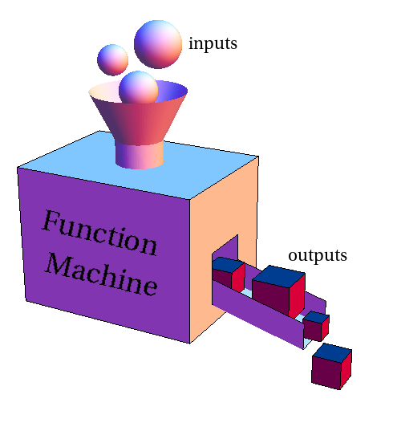

What will we learn today?
Functions
Why Functions?
The function is considered one of the greatest inventions in computer science. It makes programs easier to read and to understand. It allows for us to more easily modify and extend code. It saves space and improves performance.
At the most basic level, a function is a series of instructions that can take an input and produce an output. Parameters dictate how the function behaves.

We've used functions a bit, but now we need to know how to use them well.
There are many ways to write code that does the same thing. But are they all equal?
Exercise: Let's look at a really obvious example of a function with redundant code. What could we do to improve it?
function printHelloFiveTimes() {
console.log("Hello");
console.log("Hello");
console.log("Hello");
console.log("Hello");
console.log("Hello");
}
Exercise: write an improved version of this function
Now, let's look at a different example. Let's say we wanted to welcome mentors:
function welcomeMentors() {
console.log("Hello Mozafar");
console.log("Hello Rares");
console.log("Hello Tim");
console.log("Hello Ashleigh");
console.log("Hello Gordon");
}
We could be lazy and change how we welcome the mentors.
function welcomeMentors() {
var mentorNames = "Mozafar, Rares, Tim, Ashleigh, Gordon";
console.log("Hello " + mentorNames);
}
But it's not quite the output we wanted. And we can be smarter about it. Why not a loop?
Exercise: write an improved version of this function
So functions help us to organise and enhance our code. But what makes good design? Is it just "shorter is always better"?
Good Design
Design is important if we want our code to be understandable (both to other humans, but also to us in the future), to be easy to use and easy to expand.
There are three main principles you need to know now: clarity, reusability and extensibility. There are also others, but they are deeply related to these three.
Ease of Maintenance / Clarity
- Naming
- Commenting
- Clear logic
- Concise
- Formatting
- Avoiding Redundancy
Reusability
- DRY
- Single Reponsibility
- Avoiding global state (scope)
- Predictability and Ease of testing
Extensibility
- Avoiding being unnecessarily specific (e.g. magic numbers)
Now let's take a look at a bigger example of a badly written function
function myFunction(salary, taxCode, incomeTax1, incomeTax2, ownsCar) {
var totalIncomeTax = incomeTax1 + incomeTax2;
var studentLoan = (salary - 17775) * 0.09;
var originalSalary = salary;
var nationalInsurance = null;
if (taxCode === "1150L") {
nationalInsurance = salary * 0.1;
} else if (taxCode === "ST") {
nationalInsurance = salary * 0.05;
} else {
nationalInsurance = salary * 0.08;
}
var deductions = [nationalInsurance, totalIncomeTax, studentLoan];
salary = salary - deductions[0];
salary = salary - deductions[1];
salary = salary - deductions[2];
return (
"Your gross income is £" +
originalSalary.toString() +
" and your net income is £" +
salary.toString() +
"."
);
}
console.log(myFunction(28000, "1150L", 1000, 580, false));
What is wrong with this function?
Naming: the function has a bad name, myFunction() tells you nothing about what the function does. It's also considered bad practice to name variables vaguely by separating them through numbers (incomeTax1, incomeTax2, etc). If you find yourself doing this then you should either use an array (such as incomeTax[]).
Commenting: the function isn't documented at all. It's very difficult to understand what the function's purpose is and how each part of the code contributes to it. By writing comments, the coder communicates their reasoning and helps the function be human readable.
Layout/formatting: unnecessary spacing between the if and else statement.
Single responsibility: the function doesn't have a single purpose. It calculates national insurance and salary deductions. Maybe the national insurance calculation could be moved to a separate function.
Input variable being overwritten: the function requires gross salary (before deductions) and net salary (after deductions) the
salaryinput variable is therefore copied into anoriginalSalaryvariable so that it can be changed. It would be much clearer to create a newnetSalaryvariable and leavesalaryunmodified.DRY principle: the function validates the DRY (Don't Repeat Yourself) rule. The line where a deduction is taken from the salary is repeated 3 times with different indices. This can be replaced with a
forloop.Magic numbers. The code contains a lot of magic numbers, including
17775,0.09and0.1.Useless parameters: the code contains a variable which isn't used. They should be removed because they are confusing. It is tempting when you're starting to code a function to add more parameters thinking that you might need them, but it's important to remove them if you don't end up using them.
Exercise: Working in pairs, go through all of these issues and make appropriate improvements to the code.
Exercise: Write a function that will print out the number of vowels that are in mentors' names.
TDD
Before we get started
Fork > this repository to your own Github account, then clone it to your computer.\ Today's exercises will be based on this repository.
Unit Testing
Testing is a key skill for any software programmer. We need to make sure our software is thoroughly tested, otherwise bad things happen. Testing makes sure our programs behave like we intend them to do - if we don't test, we can cause severe bugs. Bad software can make planes crash, companies bankrupt, and users of your software really frustrated.
There are different levels on which we can test software, for example integration testing, end-to-end testing, and unit testing. Today we will deal with unit testing, which is probably the most universal testing discipline.
A unit test is exactly that - it tests a unit of code. "Unit" can mean different things, but in JavaScript it usually refers to a single function.
Remember when we talked about functions? Functions take input (as arguments),
do something with it (in the function body), and return output (using the
return statement). Ideally, a function should always return the same output if
the same input is given. It makes it predictable and testable - and that's what
we want!
|-----------------|
input => | doing something | => output
|-----------------|
So, when unit testing a function, we want to make sure that for a certain input, we get the expected output. For this we need to make sure that the output matches our expectations. In the simplest form that means we do an equality check:
myFunction(input) === expectedOutput;
We can formalise this using another function that compares two values and
complains when they do not match. Such a function is prepared in
unit-testing/equals.js.
We can use this function to simply compare to values:
equals(1, 1); // This should pass
equals(1, 2); // This should fail
equals("Hello", "Hello"); // This should pass
Now we can use this equals() function to test our own code by comparing a
function result to an expected value.
Remember that one function can be used as an argument when a second function is called. In this instance, the function we are testing would represent our first function, and our equals() function would represent the second, like so...
equals(myNewFunction(arg1, arg2, etc), expectedOutput)
As you can see in this example, instead of using a number as the first argument to the equals() function, we have used a function instead; the one we wish to test.
Together: Follow the instructions in
unit-testing/sum.js!Exercise: Now you! Take the provided
unit-testing/findNeedle.jsand turn it into a function that returns a result instead of printing it. Then run it using multiple inputs and make sure it returns the correct results each time!
Test-driven development (TDD)
Test-driven development (TDD) is a software development process that relies on the repetition of a very short development cycle: requirements are turned into very specific test cases, then the software is improved to pass the new tests, only. (Wikipedia)
A key principle in TDD is that we write think about our requirements before we dive into code: What should our program be able to do? What are our edge cases?
We formalise those requirements by writing tests - even before our program is written! At this time, all our tests will fail, because we haven't written any code yet. Our tests are now RED (the colour represents a failing test).
Now we want to turn this RED into GREEN. We do this by implementing our function in a way that covers all our test cases.
Exercise: Follow the instructions in
tdd/findNeedle.js!
Refactoring
There are times when we want to make our code better without changing any functionality, for example because we just learnt about a better way to solve a certain problem (like, finding needles in haystacks). This is called refactoring.
When previously GREEN code - working code! - suddenly does not work anymore, we call this a regression. Our existing tests can make sure that when we refactor, the functionality of our code actually stays the same, and does not regress.
Together: Refactor the
findNeedlefunction we just wrote to be implemented using.map()and.filter().
Unit testing frameworks
There are lots of other things you might want to test for than two things being equal. You might want to test if a number is smaller or greater than another, if a function was called, if an error happened, or if one thing happened before another thing, or how long a function call took to execute.
We don't have to build all these things ourselves. Instead there are unit testing frameworks that take all that work off our shoulders. All we need to do is provide the code and the tests.
Jest
The unit testing framework we are trying to day is called Jest. It's created by Facebook and useful for all kinds of unit testing (especially testing React, which we will do in a later lesson).
Look into your jest/ folder. You will find a file there, sum.test.js. The
suffix .test.js tells Jest that this file contains tests it should execute. To
execute the test, run the following command in your terminal:
npm test
This command runs the test in sum.test.js, which tests the sum() function.
You can see the test output and the fact that the test passed.
Tests cases in Jest have the following structure:
test("test description", function() {
// Test instructions
});
Jest provides a set of functions that you can use to write your actual tests. They are created in a way that imitates natural language, for example:
_Expect_ sum of 1 and 2 _to be_ 3
becomes
expect(sum(1, 2)).toBe(3);
You can add multiple test statements in the same test case (a test case is one
call of the test function, but you can also create multiple test cases in one
file. It is important that you give all your test cases meaningful descriptions.
Exercise: Add another test case to
sum.test.js. Is the sum of 10 and -10 really zero? Run the tests using Jest.Exercise: Take the
findNeedlefunction you have tested previously, copy it into thejest/folder and call itfindNeedle.test.js. Then write a test to be used with Jest, similar tosum.test.js. Make sure you cover multiple inputs and give all tests meaningful descriptions! Run the tests using Jest.
Test coverage
Test coverage describes the extent to which a code base is tested. When Jest runs your tests, it generates a so-called coverage report. This report tells you how many of your lines of code are covered by tests, how many functions, statements, and branches.
A branch is one of multiple ways a code control flow can go. For example, if you have an
if() ... else ..., both the "if" and the "else" branch must be covered by tests.
We want to keep our code coverage as high as possible. Jest allows us to generate a coverage report when we run the following command in the terminal:
npm test -- --coverage
Exercise: Check your code coverage for the tests you wrote. Is any of the numbers below 100%? If so, try and bring it up to 100%!
Resources
- JavaScript: The Good Parts by Douglas Crockford, chapter 4 - Functions
- MDN Objects basics
- MDN OOP in JS
- Test-driven development
- Jest
- Modules
Homework
- Find examples in your own code where you violated the three principles of good code (Clarity, Reusability, Extensibility). For each principle, find one example.
- Clone the repo of the election project and finish all of the part 1 exercises.
- Register yourself on the Marc Littlemore's free JavaScript Testing for Beginners course and work your way through the 7 lessons, which are delivered via a daily email. The course uses a Mocha/Chai framework, which is in common use within the web development industry. This will give you more TDD practice using a different approach to Jest, as well as more exposure to ES2015/ES6 JavaScript.
Research
- Research other module formats than CommonJS. What is AMD? What are ES6 modules and how do their differ from CommonJS?
- What are other test frameworks for JavaScript?
- More parts of the Jest (Jasmine) DSL than just
.toBe()